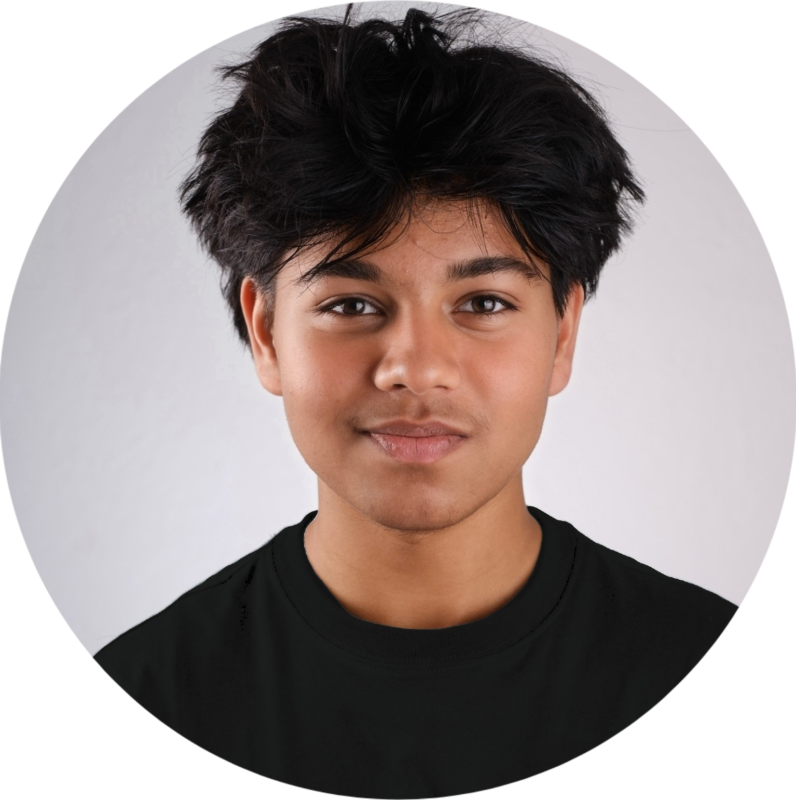

AZW
Sonnenbergstrasse 14
8610 Uster (ZH)
Zürich,
Sehr geehrte Damen und Herren
Vor Kurzem habe ich bei der AZW Uster angerufen, um mich nach offenen Lehrstellen im Bereich Informatik zu erkundigen. Als mir mitgeteilt wurde, dass Sie aktuell eine Lehre als Informatiker EFZ in der Fachrichtung Plattformentwicklung anbieten, habe ich mich sehr gefreut. Die Vorstellung, meine berufliche Laufbahn in diesem zukunftsgerichteten Bereich beginnen zu dürfen, motiviert mich sehr.
Die Plattformentwicklung interessiert mich besonders, weil man dabei nicht nur Anwendungen entwickelt, sondern auch dafür sorgt, dass die zugrunde liegenden Systeme stabil laufen. Bei der AZW Uster ist Informatik ein zentraler Bestandteil des Lehrangebots. Besonders schätze ich, dass Sie grossen Wert auf praxisnahes Lernen, moderne Infrastruktur und persönliche Betreuung legen. Genau in einem solchen Umfeld möchte ich meine Lehre absolvieren.
Im Sommer letzten Jahres habe ich die Sekundarschule Liguster im Niveau A abgeschlossen. Zurzeit besuche ich das Berufsvorbereitungsjahr Technik und Informatik an der Fachschule Viventa in Zürich. Besonders in den Fächern Englisch, Deutsch und Mathematik zeige ich gute Leistungen. Im Informatikunterricht arbeite ich mit HTML, CSS, JavaScript und Python. Auch in meiner Freizeit beschäftige ich mich gerne mit Technik. Aktuell programmiere ich mit Arduino und arbeite an einem LED-Streifen-Projekt.
Auch wenn ich bisher keine Schnupperlehre als Informatiker gemacht habe, konnte ich an mehreren Informationsveranstaltungen teilnehmen. Dabei habe ich viel über das Berufsbild erfahren, was meinen Wunsch weiter gestärkt hat.
In meiner Freizeit gehe ich ins Fitnessstudio und betreibe Judo. Diese Aktivitäten helfen mir, diszipliniert, ausdauernd und fokussiert zu bleiben. Genau diese Eigenschaften möchte ich in meine Lehre einbringen.
Ich freue mich darauf, meine Motivation bei einer Schnupperlehre persönlich zu zeigen, und danke Ihnen herzlich für die Prüfung meiner Unterlagen. Gerne warte ich auf Ihre Rückmeldung.
Freundliche Grüsse
Saif Abdullah
AZW
Sonnenbergstrasse 14
8610 Uster (ZH)
Zürich,
Meine Eignung für den Beruf Informatiker EFZ Plattformentwicklung
Der Beruf des Informatikers interessiert mich sehr, weil ich gerne selbst digitale Lösungen entwickle. Besonders HTML, CSS und JavaScript faszinieren mich, weil man damit direkt sehen kann, wie Technik funktioniert und aussieht. In der Schule und auch privat arbeite ich oft mit diesen Programmiersprachen und erstelle eigene Webseiten. Es macht mir Freude, Ideen digital umzusetzen und dabei ständig etwas dazuzulernen.
Ich arbeite konzentriert, sorgfältig und gewissenhaft. In der Schule erledige ich Aufgaben vollständig und pünktlich. Besonders im selbstorganisierten Lernen bin ich es gewohnt, meine Arbeiten selbst zu planen und umzusetzen. Ich arbeite gerne im Team, bin kommunikativ und bringe mich aktiv in Gruppenarbeiten ein. Diese Eigenschaften möchte ich auch in meine Lehre einbringen.
Warum ich mich für die AZW entschieden habe
Ich habe mich telefonisch und online über die AZW informiert und war sofort vom Informatikangebot überzeugt. Am Standort Uster wird die Fachrichtung Plattformentwicklung angeboten, bei der man IT-Systeme nicht nur betreut, sondern auch aktiv mitgestaltet. Das hat mich besonders angesprochen.
Bei AZW Uster steht die Informatik im Zentrum und ist nicht einfach ein Zusatzbereich. Lernende arbeiten an echten Projekten, verwalten Plattformen und Systeme und übernehmen früh Verantwortung. Genau das suche ich. Ich möchte in einer Umgebung lernen, in der moderne Technik, praxisnahes Arbeiten und Teamarbeit zusammenkommen. Ausserdem finde ich es spannend, dass die Lernenden mit verschiedenen technischen Berufen zusammenarbeiten und auch externe Aufträge bearbeiten dürfen. Ich bin überzeugt, dass ich mich bei der AZW technisch und persönlich weiterentwickeln kann.
Meine Ziele
Ich arbeite täglich daran, mich weiterzuentwickeln, besonders in Mathematik, Technik und Informatik. In der Oberstufe hatte ich wegen einer Epstein Barr Virus Erkrankung einige Absenzen. Heute geht es mir wieder gut und ich bin sehr motiviert. Ich freue mich darauf, meine Energie und Lernbereitschaft in die Lehre bei der AZW einzubringen.
Freundliche Grüsse
Saif Abdullah
Name: Saif Abdullah
Geburtsdatum: 24. November 2008
Heimatort: Zürich
Nationalität: Schweiz, Bangladesch
Vater: Saifullah Mohammed Tarek, Pflegehelfer
Mutter: Masuda Parvin, Hort Mitarbeiterin
Schwester: Hazra Tarek, 2015, Schülerin
Deutsch: Erstsprache
Englisch: Schulkenntnisse 3. Jahr
Französisch: Schulkenntnisse 5. Jahr
Bengalisch: Muttersprache
Gym, Judo, Lesen
Klassenlehrer: Stefan Herde
Email: stefan.herde@schulen.zuerich.ch
Telefon: 044 413 52 50